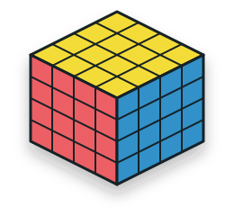

BIG CUBE MANUAL
BEGINNER4x4 CUBE
センターとエッジを揃え、3x3の形にして完成させる

4x4キューブにチャレンジしよう
3x3キューブが揃えられるようになったら、次は4x4キューブに挑戦してみましょう。このマニュアルでは、センターとエッジをまとめて3x3と同じように扱える状態を作る「リダクション法」を使います。
3x3の全手順と、R・U・Fなど外層の回転記号を理解していることを前提とします。不安な場合は3x3初心者向け手順と回転記号を先に確認してください。
- センター4個のセンターパーツを1面にまとめます。
- エッジ同じ2色のウイングを2個ずつペアにします。
- 3x3フェーズセンターとエッジを1つのパーツとして扱います。
4x4の構造
4x4も3x3と同じように、コーナー・エッジ・センターの3種類のパーツでできています。違いは、各1面のセンターが4個、各エッジが2個に分かれていることです。
センターパーツ
1面に4個あります。中央に固定パーツがないため、自分で正しい配色を作ります。
ウイング
分割されたエッジパーツ1個の呼び名です。同じ2色のウイング2個を「エッジペア」にします。
センターバー
同色のセンターパーツ2個を辺でつなげた列です。2本のバーを合体させると1面が完成します。
リダクション
センター4個と1組のエッジペアを、それぞれ3x3の1パーツのようにまとめる考え方です。
センターの配色
4x4にはど真ん中の固定センターがないため、色の位置を自分で決める必要があります。標準配色の反対色は次の3組です。
白 ↔ 黄
白の反対面は黄です。
赤 ↔ オレンジ
赤の反対面はオレンジです。
青 ↔ 緑
青の反対面は緑です。
横並びも確認
例えば赤を上、黄を手前にすると、緑が左、青が右になります。
追加の回転記号
外側の1層だけを回す記号は3x3と同じです。4x4では、2層をまとめて回すワイドターンと、内側の1層だけを回す記号を追加します。
R
右の外層1層だけを回します。
Rw
右の外側から2層を同時に回します。2Rwと同じ動きですが、本書ではRwに統一します。
r
本書では、右の内側1層だけを回す記号として使います。
u
本書では、上の内側1層だけを回す記号として使います。エッジペアリングで使います。
x
キューブ全体をRと同じ方向に持ち替えます。パリティ手順で使います。
U2はU面を180度回す記号です。一方、2Rwの先頭の2は「2層」を表します。本書では混乱を避けるため、2層同時回転をRwと書きます。
センターを揃える
まずは各1面にある4個のセンターパーツをまとめます。いきなり2x2を作るのではなく、同色2個のセンターバーを2本作り、最後に合体させます。
1色目のセンター
- 揃える色のセンターパーツを2個見つけます。
- 内層とU面を使い、2個を辺でつなげて1本のバーを作ります。
- 同じ色の残り2個で、2本目のバーを作ります。
- 2本のバーを別の列に置き、内層を回して同じ面に合体させます。
UとU'の使い分け
Rwで目的のセンターをU面へ持ち上げたら、そのパーツをRwで戻る列から逃がす方向にU面を回します。下の図はRwを回した直後の状態を、U面とR面だけで表示しています。逃がす方向によって2ケースを使い分けます。
Rw U Rw'ピンクを持ち上げ、U方向へ逃がしてから列を戻します。
Rw U' Rw'ピンクを持ち上げ、U'方向へ逃がしてから列を戻します。
Rw'を行う前に、入れたセンターがRwの列から外れていることを確認します。列に残ったまま戻すと、パーツも元の位置へ戻ってしまいます。
2色目以降の順番
- 1色目と反対の色を、反対面に揃えます。
- 完成した2面を左右に持ち、残り4面を作業面にします。
- 隣り合う2色を揃え、それぞれの反対色を正しい面に置きます。
- 最後の2色は、片方を正しく揃えればもう片方も自動的に揃います。
反対色と横並びが間違っていると、後の3x3フェーズで完成しません。エッジペアリングに進む前に確認しましょう。
エッジをペアにする
4x4には24個のウイングがあります。同じ2色を持つウイングを2個ずつ組み合わせ、12組のエッジペアを作ります。まずは効率より、1組ずつ確実に作ることを優先します。
1組ずつペアにする
- 同じ2色を持つウイングを2個見つけます。
- 2個を手前左と手前右のエッジ位置へ、
u'を回したときにペアになる高さと向きで置きます。 - 上段手前（UF）のエッジがまだ揃っていないエッジであることを確認します。すでにペアなら、外層回転だけで未完成エッジと入れ替えます。
u' R U R' uを最後まで回します。
u' R U R' u
u'ウイングを合わせてペアを作る
R U R'完成ペアを退避し、UFの未完成エッジを差し込む
u内層を戻してセンターを復元する
R U R'でUFのエッジが作業スロットへ差し込まれます。ここが完成済みペアだと、最後のuでそのペアが崩れます。必ず未完成エッジを置いてください。
ウイングの向きが合わないとき
同じ2色のウイングを作業位置に置いてもペアにならない場合は、右手前のウイングを次の手順で反転させてから、もう一度並べます。
R U R' F R' F' R
最後の2ペア
残り2組になると、通常の「作る → 逃がす → 戻す」では退避場所が足りません。残ったウイングを手前左と手前右に置き、次の手順を使います。
Uw' (R U R' F R' F' R) Uw
最初と最後のUwはセンターを崩して戻す動き、括弧内はウイングを反転させる動きです。
3x3フェーズへ進む前に、24個のウイングが12組のペアになっていることを確認してください。
3x3として揃える
センターと6面と12組のエッジペアが完成したら、4x4を仮想的な3x3として揃えます。
センター
2x2の同色ブロック全体を1個のセンターとみなします。
エッジ
2個のウイングで作ったペア全体を1個のエッジとみなします。
Rw・Uwなどのワイドターンや、r・uなどの内層回転を使うと、揃えたセンターやエッジペアが崩れます。R・L・U・D・F・Bの外層回転だけで、クロスから最後まで揃えましょう。
パリティを直す
4x4の最後の層では、3x3には存在しない状態が現れることがあります。これをパリティと呼びます。パリティはミスではなく、4x4で正常に起こる状態です。
センターが正しい配色で、12組全てのエッジがペアになっている場合に限りパリティと判断します。
OLLパリティ
最後の層のエッジペアが1組だけ裏返ったように見え、上向きのエッジ数が奇数になる状態です。対象のエッジペアを手前のU面に置いて手順を行います。
Rw U2 x
Rw U2 Rw U2 Rw' U2
Lw U2 Rw' U2 Rw U2
Rw' U2 Rw'
手順の途中でセンターと下2段が大きく崩れますが、最後まで回せば復元します。
PLLパリティ
最後にエッジペア2組だけが入れ替わり、3x3のPLLでは解決できない状態です。入れ替える2組を手前と奥に置きます。
r2 U2 r2 Uw2 r2 Uw2 (U2)
rは右の内側1層だけの回転です。最後の(U2)は、上段の位置合わせが必要な場合に行います。
困ったとき
センターの色が合わない
反対色だけでなく、横並びを確認します。間違っている場合はエッジより前に直します。
エッジが1組だけ揃わない
パリティではありません。ほかのエッジに同色のウイングが混ざっていないか確認します。
3x3の途中でペアが崩れた
Rw・Uw・r・uを回していないか確認します。3x3フェーズでは外層だけを使います。
パリティ手順で崩れた
Rwとrを取り違えていないか、また対象エッジの持ち方が正しいかを確認します。
完成前のチェックリスト
| センター | 6面が2x2の同色で、反対色と横並びが正しい。 |
|---|---|
| エッジ | 24個のウイングが、12組の同色ペアになっている。 |
| 3x3フェーズ | 外層回転だけで、3x3の全手順を行う。 |
| 最後の層 | 3x3で起こらない状態のときだけ、OLLまたはPLLパリティを使う。 |
最初はセンターとエッジペアリングに時間がかかります。手順を増やすより、「入れて・避けて・戻す」と「作って・逃がして・戻す」の2つの動きを繰り返し練習しましょう。